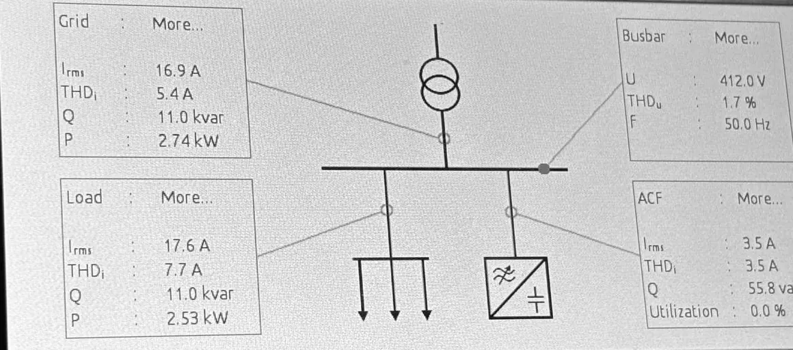
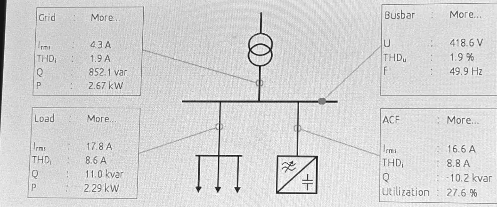

HTW Berlin · team lab
Active harmonic filter on a 400 V test bench
In a Smart Grids lab, six of us operated a commercial shunt active filter in front of a six-pulse rectifier drive on a 400 V, 50 Hz test bench, and measured what it did to the current drawn from the grid. My part of the report was the analysis of the 20 A operating point against the uncompensated baseline.
- Role
- Team lab of six; my part was the analysis of the 20 A operating point
- Bench
- 400 V, 50 Hz mains; B6C rectifier feeding a DC motor coupled to an induction machine; the filter in parallel at the point of common coupling
- Filter
- GRIDCON ACF, commercial equipment: operated and measured, not designed by us
- Operating point
- IDC = 20 A, n = 400 min−1
- When
- 2026
Team measurements at the 20 A operating point
- Grid current with reactive-power compensation on, about 75 % lower, while the load current was essentially unchanged (17.6 A, then 17.8 A)
- 16.9 → 4.3 A
- Reactive power drawn from the grid
- 11.0 kvar → 852 var
- Displacement factor cos φ at the grid connection
- 0.24 → 0.95
- Grid-side harmonic current (THDi) when the dedicated harmonic loop was added on top
- 1.9 → 1.7 A

(a) Filter idle

(b) Reactive-power compensation on
My analysis
- Baseline. With the filter idle the grid carried the load's full reactive power, 11.0 kvar against 2.74 kW of active power, so the displacement factor at the grid connection was only about 0.24: a strongly inductive load.
- A balance as a check. With reactive-power compensation on, the busbar balance Q1 ≈ Q2 + Q3 = 11.0 − 10.2 = 0.8 kvar matched the measured 852 var within measurement tolerance.
- Why the grid current fell. The reactive component, previously the dominant part of the grid current, was now supplied locally by the filter instead of being drawn from the mains: the grid current fell by about 75 % and cos φ rose to about 0.95.
- Harmonics as a by-product. The grid-side harmonic current fell from 5.4 A to 1.9 A before the harmonic loop was switched on, because the filter was now carrying most of the load current, and with it most of the load's harmonic content.
- Not independent, not additive. Adding the dedicated harmonic loop trimmed the grid-side harmonic current only from 1.9 A to 1.7 A, about 10 %, with Q, P and Irms essentially unchanged. At this operating point the disturbance was dominated by reactive power rather than by harmonics, and the two compensation mechanisms interact rather than add.
What I took from it
- Find what dominates before choosing the fix. The load's disturbance was mostly reactive power, so the reactive-power loop alone recovered most of the improvement.
- The loop that fixed the problem was not the one built for it. The harmonic loop added about 10 %; the reactive-power loop had already moved most of the harmonic current off the grid.
- Close the balance. Checking that the three measured reactive powers add up tests both the readings and the explanation.
Scope
Team lab of six: the measurements and photos are the team's, shown with its consent. The filter is commercial equipment that we operated and measured; we did not design or build it. The analysis above is my chapter of the team's report.